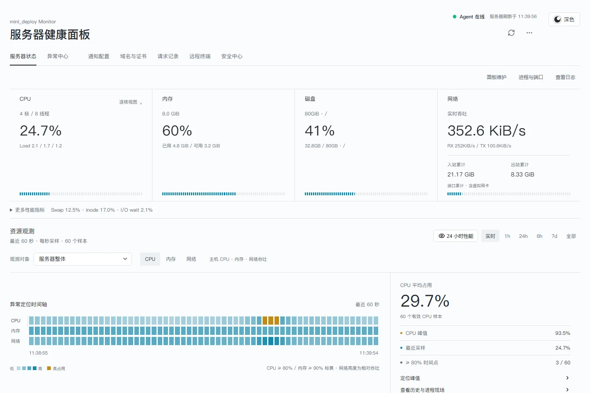

性能不止看现在
CPU、内存、网络与磁盘持续观测。回看历史曲线和进程现场，区分实时速率与累计流量，导出性能报告。
资源观测 / 进程现场 / 历史报告从一个波动，找到发生问题的那一刻。
交互演示，非当前设备指标。面板支持查看历史时间点的资源、进程现场与关联事件。
为已经在运行的服务而做。
从服务器到容器，从请求来源到登录地区。日常要看的、出问题要查的，放在一起。
CPU、内存、网络与磁盘持续观测。回看历史曲线和进程现场，区分实时速率与累计流量，导出性能报告。
资源观测 / 进程现场 / 历史报告动态路径分级归类，定位慢请求与失败接口。在来源地图上查看地区、IP、访问次数与最近请求。
请求地图 / 耗时分析 / 记录导出从一条异常或历史时间段开始，让 AI 读取证据、查看代码与日志，再沿线索核对。诊断记录持续保存。
OpenAI 兼容接口 / Claude 原生接口登录地区地图、认证失败记录、自动与手动 IP 封禁。按入口支持情况启用连接防护和请求限流。
登录防护 / IP 封禁 / 入口限流查看运行状态、实时日志和资源历史。识别 OOM、反复重启，按需管理镜像与常用容器操作。
Docker / 容器日志 / 镜像管理SSH 终端与文件管理同屏使用，AI 对话可调整大小。扫描站点证书，查看有效期并更新证书文件。
远程终端 / 文件管理 / 证书发现产品实景
实际面板截图，使用模拟数据。
从你最关心的地方开始。

从异常走到证据。
把问题、主机和时间连起来。让模型拿到可核对的现场，再决定下一步。
选中异常或性能时间范围，带着上下文进入对话。
按权限核对资源、进程、日志和项目源码。
区分已证实的结论与待验证的原因，继续追问并保留历史。
在目标 SSH 连接中使用工具，按所选权限审批或自动操作，业务文件禁止删除。
现在，连接你自己的服务器。
Linux / root / systemd / Python 3.10+ / Git
git clone https://github.com/jokerXueC/mini_deploy.git mini-deploy-source
cd mini-deploy-source
bash install.sh在 root 终端执行。Git 需预先安装。
设置管理员密码，Docker 和 Nginx 按需要选择。
访问 http://服务器IP:6868，放行对应端口并限制访问来源。
再按需要接入请求采集、模型服务、通知与防护。
当前为预发布项目，Agent 默认以 root 运行。传输 SSH 凭据与模型密钥时优先使用 HTTPS 或本地隧道。
完整安装与升级说明还有几个问题。
不需要。mini_deploy 管理已运行的主机与服务，不提供应用构建或 Git 自动部署。请求记录需要接入支持的代理日志或独立请求网关。
不是必选。主机监控可以独立使用，Docker 功能需要 Docker。面板可通过服务器 IP 与 6868 端口访问。
面板诊断使用只读工具。SSH 工具按所选模式审批或自动操作，修改前备份已有文件，业务文件禁止删除。模型由你配置，不包含模型服务费用。
不能。内置登录防护采用失败次数、统计窗口与封禁时长策略，不强制安装 Fail2ban。主机连接防护和支持入口的限流可缓解部分滥用，实际能力取决于入口与防火墙；大流量 DDoS 仍需要云端清洗、CDN 或上游防护，Web 内容检测可配合专用 WAF。
监测历史保存在面板服务器。启用 AI 后，问题、上下文与工具证据发送至你配置的模型服务；地图定位会把公网 IP 单独发送给归属地查询服务，不发送请求头或请求地址。